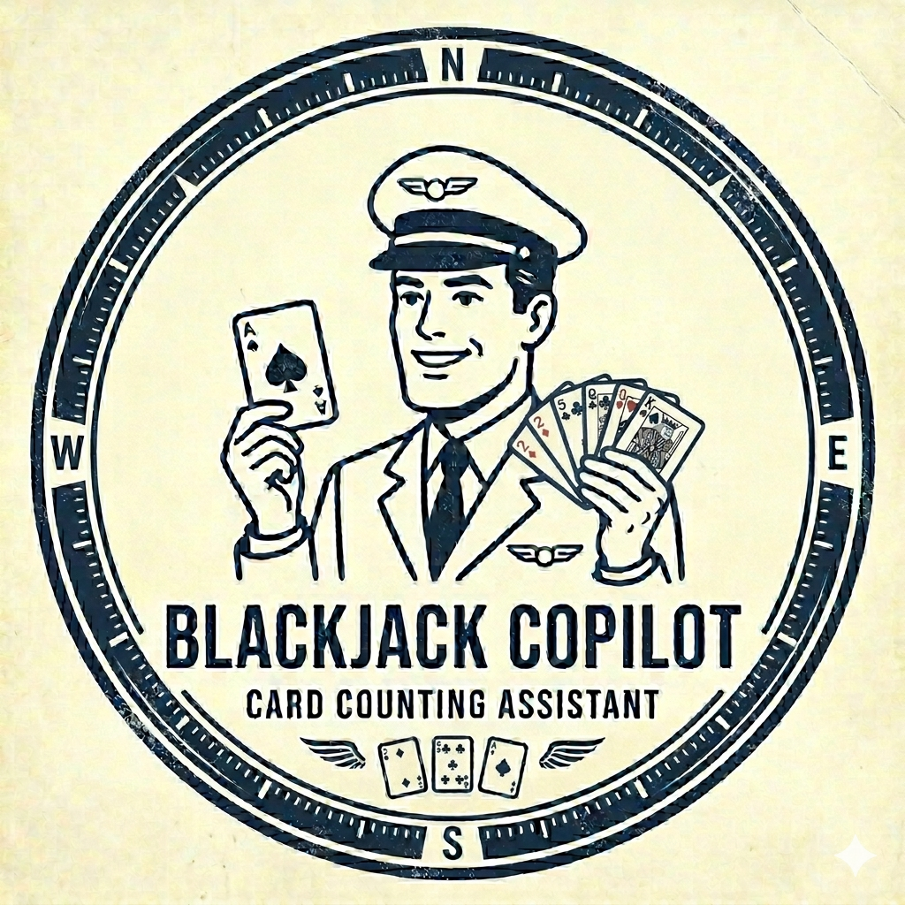
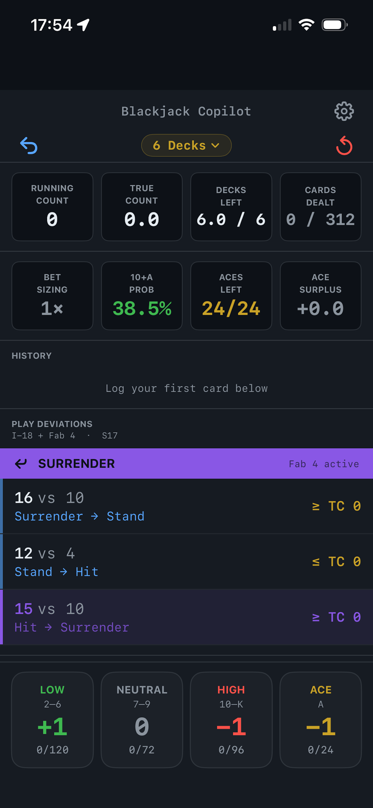
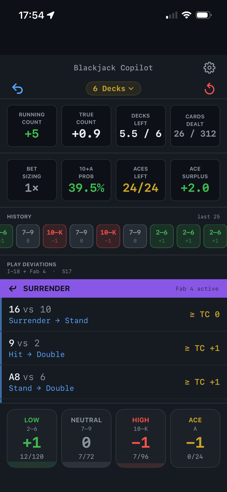
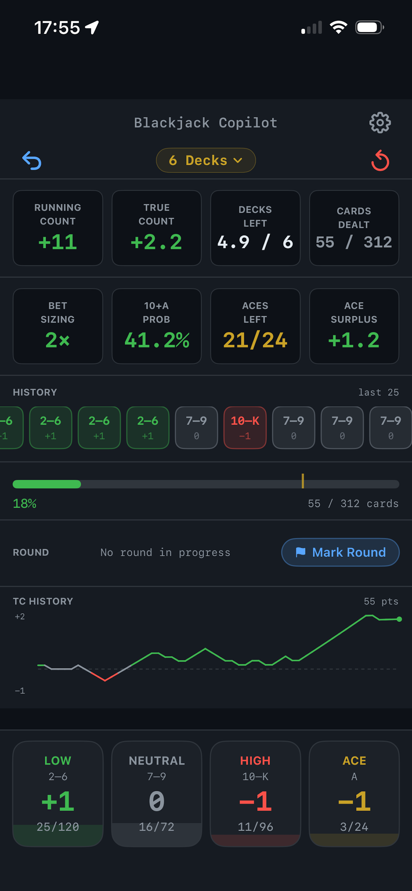
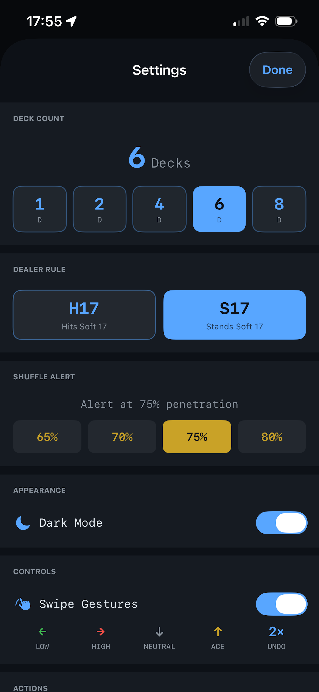

Professional Hi-Lo card counting for iPhone. Real-time true count, play deviations, and bet sizing at the table. If you're training to understand more than basic strategy and want to upgrade your game, try Blackjack Copilot !
Features
Running count and true count updated on every card entry. Ace side count with Stanford Wong surplus. Over-count protection prevents logging more cards than exist in the shoe.
Full Illustrious 18 (Don Schlesinger) and Fab 4 surrender deviations. Deck-aware index tables for 1, 2, and 4–8 deck shoes. Deviations surface only when your true count makes them relevant.
5-level bet ramp from 1× to 12× based on raw true count. Player edge estimate shown per level. Conservative sizing relative to full Kelly to reduce risk of ruin.
Color-coded TC sparkline (last 60 points visible). Penetration bar with configurable shuffle alert at 65–80%. Round delta tracker shows RC change and cards seen per round.
Screenshots



